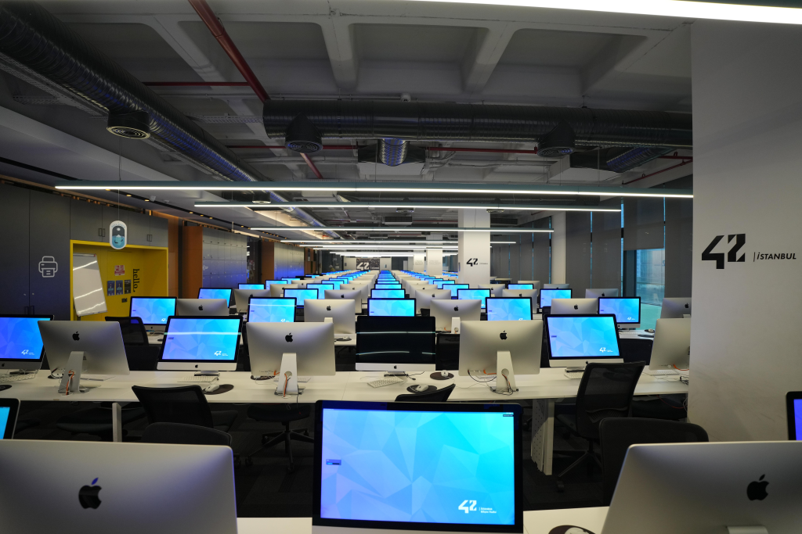

Diller
Veri & ML
Araçlar & Framework
Diğer
Artık insanların yapay zekayla kolayca birşeyler yapabildiği bu zamanda fikir bulmak zorlaştı bu yüzden bu sosyal medya uygulmasını yaptım, Bir fikri olan kişiler olmayanlara aktararak bu sayede yepyeni projeler çıkmasını sağlamış oluruz. Geliştiricelerin ve girişimcilerin fikir paylaşımında bulunmasını sağlayan,AI destekli proje üretim süreçlerini kolaylaştıran sosyal platform .
Veri Bilimi ve Analitiği eğitimimi sürdürürken aynı zamanda akran tabanlı ve proje odaklı eğitimiyle bilinen 42'de ana eğitime (Cursus) devam ediyorum. Karmaşık verileri anlamlı içgörülere dönüştürmekten, yazılım mimarilerinden ve algoritmik problemleri verimli çözümlerle ele almaktan büyük keyif alıyorum. Şu sıralar makine öğrenmesi modelleri, veri görselleştirme teknikleri ve C/Python ile temiz, sürdürülebilir kod yazımı üzerine odaklanıyorum.
Eğitim
Veri Bilimi Ve Analitiği, Lisans & 42 Turkey Cursus Student
Odak Alanı
Veri Bilimi & Makine Öğrenmesi & Web Tasarımı & Algoritma
Konum
Türkiye
Bir proje fikri, staj fırsatı ya da sadece merhaba demek için ulaşabilirsiniz.
destek@veriagiapp.com +905331662439